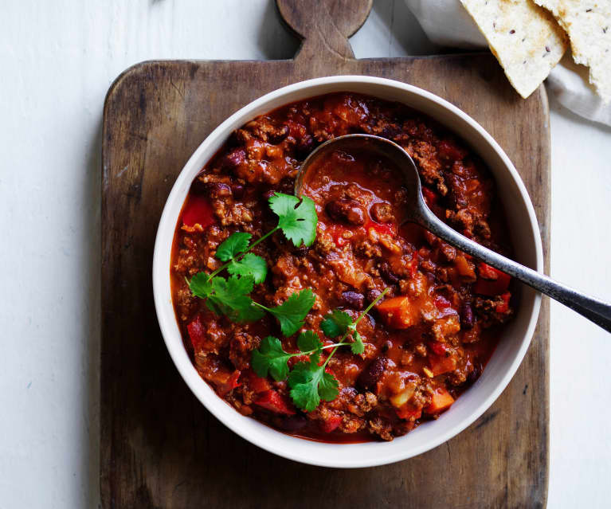

chilli

Description
Well, what can we say about chilli? It's warm, it's wholesome and it satisfies everyone
You want more? Well, umm, its high protein? It's got the minced beef and the beans, what more could you possibly want?
Ingredients
- 500g minced beef
- 500g Kidney beans
- 1 vegetable stock pot
- 1 rich beef stock pot
- 1 onion
- 500g choppped tomatoes
- 1 tspn cumin
- 1 tspn paprika
- 1 tspn cayenne pepper
- 2 gloves garlic
Steps
- Dice the garlic and onions and let them simmer in the pan in olive oil
- Add the chopped tomatoes to the pan and stir before adding the vegetable stock pot
- add olive oil to a pan and cook the mince on a low heat, evaportating the water and breaking up the clumps
- turn up the heat on the beef and add the seasoning
- Add the spiced beef to the pan of tomato sauce along with the beef stock pot, 250ml water and the kidney beans
- stir and leave to simmer for ~1 hour
- bring the heat back and serve